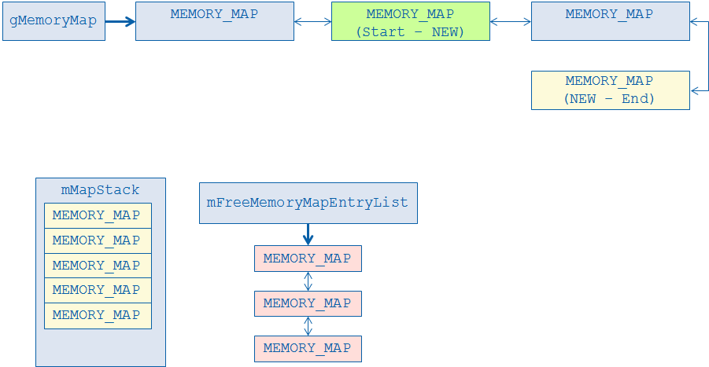
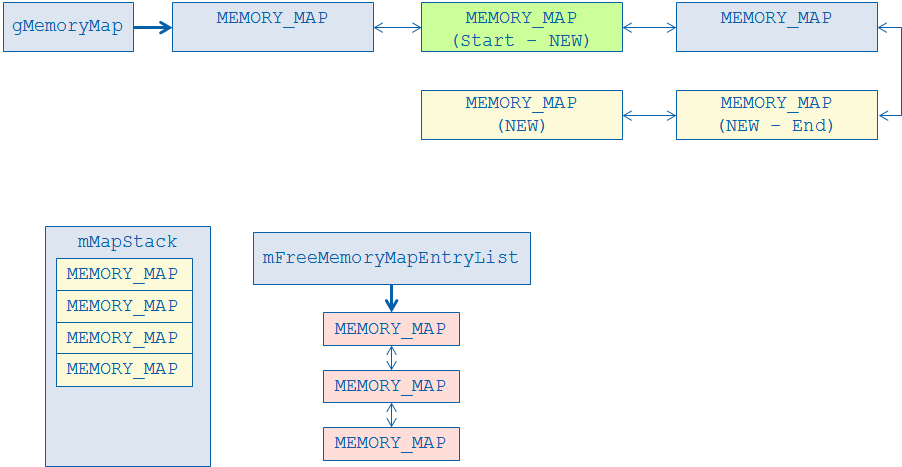
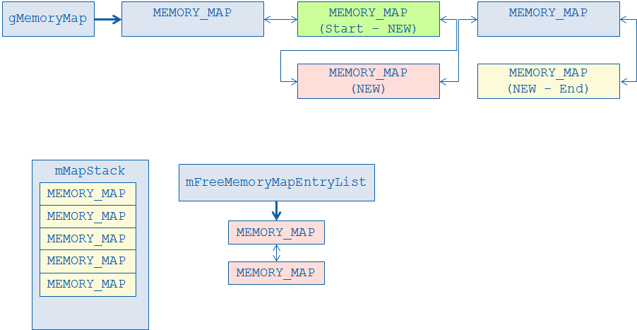
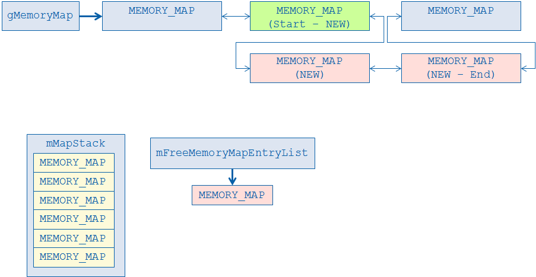
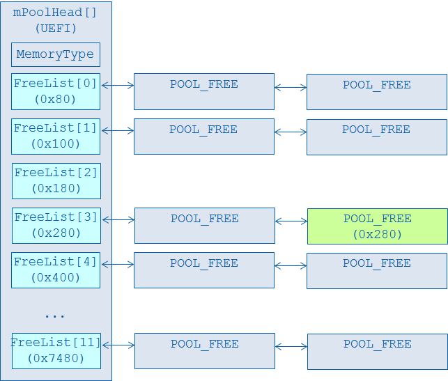
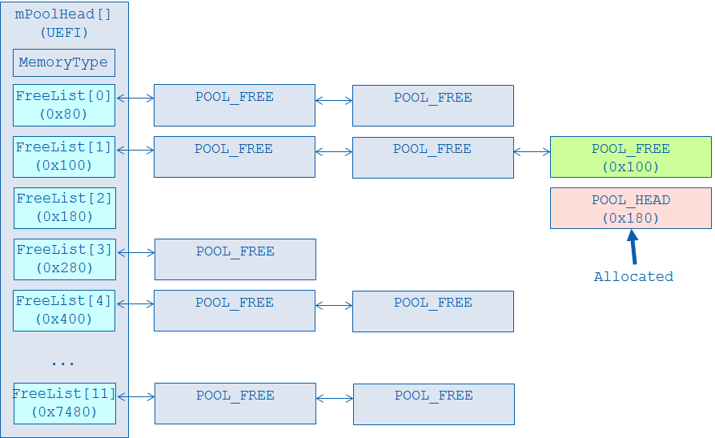

Heap Management in EDK II
In UEFI, the DxeCore maintains the heap usage. The UEFI driver or application may call AllocatePages/FreePages/AllocatePool/FreePool to allocate or free the resource, or call GetMemoryMap() to review all of the memory usage.
[Heap Initialization]
When DxeIpl transfers control to the DxeCore, all of the resource information is reported in a Hand-off-Block (HOB) [PI][1] list. The DxeCore constructs the heap based upon the HOB information. See figure 4-2 Heap Initialization.
The
DxeCoreneeds to find one region to serve as the initial memory in CoreInitializeMemoryServices()https://github.com/tianocore/edk2/blob/master/MdeModulePkg/Core/Dxe/Gcd/Gcd.c). The function is responsible for priming the memory map so that memory allocations and resource allocations can be made. If the memory region described by the Phase Handoff Information Table (PHIT) HOB is big enough to hold BIN and minimum initial memory, this memory region is used as highest priority. It can make the memory BIN allocation to be at the same memory region with PHIT that has better compatibility to avoid memory fragmentation. Usually the BIN size is already considered by platform Pre-EFI Initialization Module (PEIM) when the platform PEIM callsInstallPeiMemory()to PEI core.Then the
DxeCoreallocates runtime memory for EFI system table and runtime services table. It triggers BIN initialization inCoreAddMemoryDescriptor()(https://github.com/tianocore/edk2/blob/master/MdeModulePkg/Core/Dxe/Mem/Page.c), whenmMemoryTypeInformationInitializedis FALSE. The memory type information HOB is consumed to pre-allocate memory region for each memory type defined in this HOB. [MemMap] described the purpose and usage of the BIN.Other small DXE service allocation also happed in this region, before full memory is ready. For example,
CoreInitializeImageServices()installsEFI_LOADED_IMAGE_PROTOCOLforDxeCore, so that we can have an Image Handle forDxeCore, which will be used for Global Coherency Domain (GCD).Now
DxeCoreCoreInitializeGcdServices()(https://github.com/tianocore/edk2/blob/master/MdeModulePkg/Core/Dxe/Gcd/Gcd.c) needs figure out all memory and IO resources, add them tomGcdMemorySpaceMapandmGcdIoSpaceMap. The tested memory is marked asEfiGcdMemoryTypeSystemMemoryorEfiGcdMemoryTypeMoreReliable. The other memory is marked to beEfiGcdMemoryTypeReservedorEfiGcdMemoryTypePersistentMemory. After the GCD memory map is constructed, theDxeCorecallsCoreAddMemoryDescriptor()to add allEfiGcdMemoryTypeSystemMemoryandEfiGcdMemoryTypeMoreReliable. Now all available memory is ready for use.The last step in
CoreInitializeGcdServices()is to relocate the HOB List to an allocated pool buffer. The relocation should be at after all the tested memory resources are added because the memory resource found inCoreInitializeMemoryServices() may have not enough remaining resource for the HOB List.
Now the DxeCore heap initialization is done. The rest of DxeCore and any drivers may use the UEFI services AllocatePages/AllocatePool to allocate a chunk of memory. The DxeCore uses the below priority in FindFreePages() to find a free memory location.
* If the memory type matches the one described in the memory type information, the memory in BIN is used as first priority.
* If the memory type is not in memory type information, or there is no enough memory in the pre-allocated BIN, the DxeCore looks for the free memory with top-down algorithm.
* If there is not enough memory, the DxeCore does a special **“memory promotion”**. `PromoteMemoryResource()`([https://github.com/tianocore/edk2/blob/master/MdeModulePkg/Core/Dxe/Mem/Page.c](https://github.com/tianocore/edk2/blob/master/MdeModulePkg/Core/Dxe/Mem/Page.c)) is called to add UNTESTED memory region to be system memory. Then `FindFreePages()` tries to find some free memory again.
In the late DXE/BDS phase, there might be a memory test driver, such as [https://github.com/tianocore/edk2/tree/master/MdeModulePkg/Universal/MemoryTest](https://github.com/tianocore/edk2/tree/master/MdeModulePkg/Universal/MemoryTest), to test all untested memory and add them to the memory map. After this point all the memory is added to UEFI memory map.

Figure 4-2 Heap Initialization
[Page Management]
After the heap is initialized, the DxeCore maintains a list of memory map entries. See figure 4-3 Page management. This is a linked list with the memory addresses in ascending order. It contains memory address, length, type and attribute at the page level. When the UEFI service GetMemoryMap() is called, the contents of this linked list are returned, together with other Memory Mapped I/O (MMIO) with EFI_MEMORY_RUNTIME attribute and the reserved memory in the GCD resource list.

Figure 4-3 Page Management
When gBS->AllocatePages() is called, CoreInternalAllocatePages() calls FindFreePages() to find out which address can be allocated. The gMemoryMap linked list is traversed in CoreFindFreePagesI()(https://github.com/tianocore/edk2/blob/master/MdeModulePkg/Core/Dxe/Mem/Page.c). If the Type of an entry is EfiConventionalMemory, and the Length field of the entry is larger than the requested length, and the Start field of the entry is the highest, then the target allocated address is found in this entry. At this point CoreInternalAllocatePages()calls CoreConvertPages() to update this memory map linked list entry.
The original entry which contains the target allocated address will be separated (or CLIP operation will occur) into 2 or more entries because the memory type is now different.

Figure 4-4.1 Page Management – Clip: Step 1
Besides the gMemoryMap linked list, there are 2 data structures involved in the CLIP. mMapStack contains 6 MEMORY_MAP entries as a global variable. mFreeMemoryMapEntryList maintains a list of unused MEMORY_MAP entries. The details of the “CLIP” process is shown at figure 4-4.1 ~ 4-4.5.
Step 1: The CoreConvertPagesEx() discovers which memory map entry (the GREEN one) contain the target allocated address.

Figure 4-4.2 Page Management – Clip: Step 2
Step 2: The content of this target MEMORY_MAP entry is updated to contain the part of reset memory after allocation. If the allocated memory is in the middle of the entry, one entry (the YELLOW one) in mMapStack is popped and added to the memory map linked list. This entry covers the rest of memory. This new MEMORY_MAP entry must be from mMapStack because we are not able to allocate memory again in the allocate process. We cannot get an entry from mFreeMemoryMap, because this linked list might be empty at that time.

# Figure 4-4.3 Page Management – Clip: Step 3
Step 3: CoreConvertPagesEx() calls CoreAddRange() to add the new MEMORY_MAP entry to the memory map linked list. This new entry contains the allocated memory information. For the same reason listed earlier, this entry is also from mMapStack.

Figure 4-4.4 Page Management – Clip: Step 4
Step 4: Last but not of least importance, CoreConvertPagesEx() calls CoreFreeMemoryMapStack() to move the MEMORY_MAP entry from mMapStack to pool. CoreFreeMemoryMapStack()calls AllocateMemoryMapEntry() to dequeue a MEMORY_MAP entry (the RED one) from mFreeMemoryMapEntryList. It copies the content to the new entry and finds the correct insertion location with ascending order. The memory allocation may occur in AllocateMemoryMapEntry() if the mFreeMemoryMapEntryList is empty.

Figure 4-4.5 Page Management – Clip: Step 5
Step 5: Finally, after all entries from mMapStack are moved to pool, the memory map linked list CLIP is finished. The mMapStack is kept unchanged. The mFreeMemoryMapEntry is updated.
Later, when FreePages() happens, 2 or more MEMORY_MAP entries can be merged into one. The unused MEMORY_MAP entries are returned to mFreeMemoryMapEntryList. Those entries can be used in a subsequent AllocatePages().
[Pool Management]
Besides page management, DxeCore maintains the pool. A typical UEFI driver or application calls gBS->AllocatePool() for memory allocation.
DxeCore assigns one mPoolHead for each UEFI specification defined memory type (https://github.com/tianocore/edk2/blob/master/MdeModulePkg/Core/Dxe/Mem/Pool.c). Each mPoolHead includes a set of FreeList. Each FreeList is a linked list for the fixed size free pool. The size of each FreeList is defined in mPoolSizeTable. It is a Fibonacci sequence, which allows us to migrate blocks between bins by splitting them up, while not wasting too much memory. See figure 4-5 Pool Management.

Figure 4-5 Pool Management
When gBS->AllocatePool() is called, CoreInternalAllocatePool() calls CoreAllocatePoolI () to find out which FreeList should be used. If the requested pool size is too big to fit in all FreeList, a PoolPage is allocated and returned directly. The FreeList is untouched.
If the requested pool size matches one of the FreeList, one entry in this FreeList is dequeued and returned as the free memory.
If the matched FreeList is empty, CoreAllocatePoolI() checks the bins holding larger blocks, and will CARVE one. The detail “CARVE” process is shown at figure 4-6.1 ~ 4-6.2.

Figure 4-6.1 Pool Management – Carve: Step 1
Step 1: If the matched FreeList is empty (such as FreeList[2]), CoreAllocatePoolI() increments the Index of FreeList one by one and checks if the next FreeList is empty. If there is one FreeList that is not empty (such as FreeList[3]), one POOL_FREE entry in this linked list is dequeued (the GREEN one) and goes to the CARVE process.
If there is no available entry in all FreeList, CoreAllocatePoolI() calls CoreAllocatePoolPages() to allocate new pages as the candidate and goes to the CARVE process.

Figure 4-6.2 Pool Management – Carve: Step 2
Step 2: Since the size of this POOL_FREE candidate entry is bigger than the one requested, CoreAllocatePoolI() records the requested entry (the RED one) and splits up the remaining space (the GREEN one) into free pool blocks (such as FreeList[1]). The head of the request entry is changed from POOL_FREE to POOL_HEAD to record the pool information, such as size and type.
Later, when FreePool() is called, the information in POOL_HEAD can be used to discover into which FreeList it should be returned. If the pool size is too big to fit in all FreeList, it is a PoolPage and freed by CoreFreePoolPages(). Alternately, this POOL_HEAD is converted to POOL_FREE and is inserted into one of the proper FreeList. CoreFreePoolI() also makes an additional check to see if all the pool entries in the same page as Free are freed pool entries. If so, all of these pool entries are removed from the free loop lists, and CoreFreePoolPages() is called to free the entire pages.
[1][PI] UEFI Platform Initialization Specification, Version 1.5